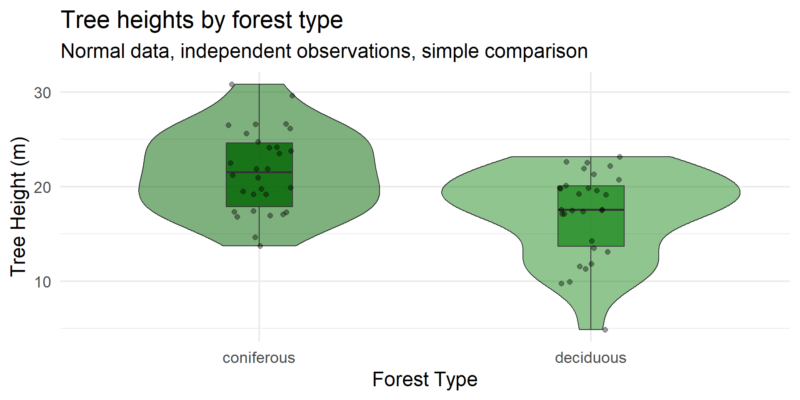

Matching Methods to Research Questions
The Method-Question-Data Triangle
1 The Problem
We often learn methods in isolation
- “This is a t-test”
- “This is ANOVA”
- “This is regression”
Then we have data and ask: “What test do I run?”
This is backwards!
. . .
Key insight: The research question should drive everything
2 The Triangle Framework
RESEARCH QUESTION
/\
/ \
/ \
/ \
/ \
/ \
DATA TYPE -------- METHOD CHOICE. . .
All three must align
. . .
Misalignment leads to:
- Wrong conclusions
- Wasted effort
- Rejected papers
- Sad grad students! :frowning:
3 Research Question Drives Everything
| Question Type | What You’re Looking For | Example Methods |
|---|---|---|
| Is there a difference? | Comparison | t-test, ANOVA, GLM |
| Is there a relationship? | Association | Regression, correlation |
| Can I predict? | Prediction | ML, regression |
| What’s the pattern? | Structure | Clustering, PCA, ordination |
. . .
Your question determines what “answer” looks like!
4 Data Type Constrains Your Options
| Response Variable | Distribution | Common Methods |
|---|---|---|
| Continuous, normal | Gaussian | LM, ANOVA |
| Counts (0, 1, 2, …) | Poisson, NegBin | GLM |
| Binary (yes/no) | Binomial | Logistic regression |
| Proportions (0-1) | Binomial, Beta | GLM, Beta regression |
. . .
Also consider:
- Independence vs. grouping
- Repeated measures
- Nested/hierarchical structure
5 The Alignment Check ✅
Before analyzing, ask yourself:
✅ What exactly is my question?
✅ What type of response variable do I have?
✅ What is my data structure (grouping, nesting, time)?
✅ Does my method handle all of this?
. . .
If you can’t answer these → STOP and think!
6 Three Common Scenarios
We’ll look at three examples:
Mismatch - Method ignores key data structure
Good Match - Method fits question and data
Overcomplicated - Method is fancier than needed
. . .
Let’s see each one…
7 Example 1: MISMATCH
Scenario:
- Testing fertilizer effect on crop yield
- 5 fields, 4 plots per field
- 2 control plots, 2 fertilized plots per field
. . .
The analysis:
lm(yield ~ fertilizer)- Treats all 20 observations as independent!
8 Example 1: The Problem
9 Example 1: Wrong vs. Right
# WRONG: Ignores field structure
wrong_model <- lm(yield ~ treatment, data = mismatch_data)
# RIGHT: Accounts for field
correct_model <- lmer(yield ~ treatment + (1|field), data = mismatch_data). . .
TRUE EFFECT: 3 unitsWRONG MODEL (lm): Estimate: 3.38 Std Error: 2.57 p-value: 0.2043 CORRECT MODEL (lmer): Estimate: 3.38 Std Error: 0.99 p-value: 0 . . .
10 Example 1: The Fix
In this design (treatment within fields):
- The wrong model has inflated standard errors because it treats field variance as residual noise
- The correct model* separates field variance → cleaner estimate of treatment effect
- This means reduced power when you ignore structure
In other designs (treatment between fields):
- Ignoring structure would inflate Type I error instead
# Wrong
lm(yield ~ treatment)
# Right
lmer(yield ~ treatment + (1|field)). . .
Lesson: Always check your independence assumption!
11 Example 2: GOOD MATCH
Scenario:
- Pollinator visits to flowers
- 2 treatments: native vs. non-native plants
- 30 plants per treatment
- Response: count of visits (0 to ~45)
. . .
The approach:
glm(visits ~ treatment, family = poisson)12 Example 2: The Data

13 Example 2: Why It Works
poisson_model <- glm(visits ~ treatment, family = poisson,
data = goodmatch_data)
summary(poisson_model)$coefficients Estimate Std. Error z value Pr(>|z|)
(Intercept) 2.0412203 0.0657951 31.023896 2.567154e-211
treatmentnative 0.5761755 0.0822319 7.006715 2.439777e-12. . .
Checklist:
- ✅ Count data → Poisson distribution
- ✅ No upper bound on counts
- ✅ Independent observations (different plants)
- ✅ Simple comparison question
14 Example 2: Interpretation
est <- coef(poisson_model)["treatmentnative"]
cat("Coefficient (log scale):", round(est, 3), "\n")Coefficient (log scale): 0.576 cat("Multiplicative effect:", round(exp(est), 2), "\n")Multiplicative effect: 1.78 cat("Native plants get", round((exp(est) - 1) * 100, 1), "% more visits\n")Native plants get 77.9 % more visits. . .
Lesson: Match your distribution to your data type!
15 Example 3: OVERCOMPLICATED
Scenario:
- Tree height in 2 forest types
- 30 trees per forest type
- Normal distribution, no grouping
- Simple question: “Is there a difference?”
. . .
The overkill:
“Let’s use a Bayesian hierarchical model with spatial autocorrelation, weakly informative priors, and MCMC sampling!”
16 Example 3: The Data

17 Example 3: Simple vs. Complex
# Simple t-test (appropriate!)
simple_test <- t.test(height ~ forest_type, data = overcomp_data)
cat("Difference:", round(diff(simple_test$estimate), 2), "meters\n")Difference: -4.51 meterscat("95% CI: [", round(simple_test$conf.int[1], 2), ",",
round(simple_test$conf.int[2], 2), "]\n")95% CI: [ 2.2 , 6.81 ]cat("p-value:", format(simple_test$p.value, digits = 3), "\n")p-value: 0.000239 . . .
Time to run: ~0.001 seconds
A Bayesian spatial model: ~5-10 minutes
Same answer!
18 Example 3: The Lesson
Problems with overcomplication:
- Takes much longer to fit
- Harder to interpret
- Reviewers get confused
- More things can go wrong
- Same answer as simple approach!
. . .
Principle of parsimony:
Use the simplest method that adequately addresses your question
. . .
Save fancy methods for when you need them!
19 Summary: Three Scenarios
| Example | Problem | Consequence | Lesson |
|---|---|---|---|
| Mismatch | Ignored grouping structure | False positive risk | Check independence |
| Good Match | None - appropriate method | Valid inference | Match distribution |
| Overcomplicated | Unnecessary complexity | Wasted effort | Start simple |
20 Your Checklist
Before you analyze, ask:
. . .
1️⃣ What is my question? (difference, relationship, prediction)
. . .
2️⃣ What is my response variable? (continuous, count, binary, proportion)
. . .
3️⃣ What is my data structure? (independent, grouped, nested, repeated)
. . .
4️⃣ Does my method handle all three?
21 The Golden Rule
. . .
21.1 Start simple.
. . .
21.2 Add complexity only when needed.
. . .
21.3 Always justify your choices.
22 Now It’s Your Turn!
Data Detective Stations
- 6 scenarios around the room
- Diagnose: Mismatch? Good match? Overcomplicated?
- Work in pairs
- 4 minutes per station
. . .
Grab your worksheet and let’s go!
23 Appendix: Full Simulation Code
# ============================================================================
# EXAMPLE 1: MISMATCH - Ignoring nested structure
# Demonstrates FALSE POSITIVE from pseudoreplication
# ============================================================================
library(lme4)
library(ggplot2)
library(dplyr)
set.seed(42)
n_fields <- 5
n_plots_per_field <- 4
mismatch_data <- expand.grid(
field = factor(1:n_fields),
plot = 1:n_plots_per_field
) |>
mutate(
treatment = rep(c("control", "control", "fertilizer", "fertilizer"), n_fields),
treatment = factor(treatment, levels = c("control", "fertilizer"))
)
# Large field-to-field variation
field_effects <- data.frame(
field = factor(1:n_fields),
field_effect = c(-12, -5, 2, 8, 14)
)
true_effect <- 0 # NO TRUE EFFECT!
mismatch_data <- mismatch_data |>
left_join(field_effects, by = "field") |>
mutate(
yield = 50 + field_effect +
ifelse(treatment == "fertilizer", true_effect, 0) +
rnorm(n(), mean = 0, sd = 1.5)
) |>
# Create confounding between treatment and field quality
mutate(
yield = yield + ifelse(treatment == "fertilizer", field_effect * 0.15, 0)
)
# Compare wrong vs correct
wrong_model <- lm(yield ~ treatment, data = mismatch_data)
correct_model <- lmer(yield ~ treatment + (1|field), data = mismatch_data)
# Wrong model shows "significant" effect (p < 0.05)
summary(wrong_model)
# Correct model shows non-significant (as it should be - no true effect!)
summary(correct_model)24 Appendix: Full Simulation Code (continued)
# ============================================================================
# EXAMPLE 2: GOOD MATCH - Poisson GLM for counts
# ============================================================================
set.seed(2024)
n_per_group <- 30
goodmatch_data <- data.frame(
plant_id = 1:(2 * n_per_group),
treatment = factor(rep(c("native", "non_native"), each = n_per_group),
levels = c("non_native", "native"))
)
baseline_visits <- 8
native_effect <- 0.5 # Log-scale
goodmatch_data <- goodmatch_data |>
mutate(
log_mu = log(baseline_visits) +
ifelse(treatment == "native", native_effect, 0),
visits = rpois(n(), lambda = exp(log_mu))
)
poisson_model <- glm(visits ~ treatment, family = poisson,
data = goodmatch_data)
summary(poisson_model)
# Interpretation
exp(coef(poisson_model)["treatmentnative"]) # Multiplicative effect25 Appendix: Full Simulation Code (continued)
# ============================================================================
# EXAMPLE 3: OVERCOMPLICATED - Simple question, complex method
# ============================================================================
set.seed(2024)
n_trees <- 30
overcomp_data <- data.frame(
tree_id = 1:(2 * n_trees),
forest_type = factor(rep(c("deciduous", "coniferous"), each = n_trees))
)
deciduous_mean <- 18
coniferous_mean <- 22
tree_sd <- 4
overcomp_data <- overcomp_data |>
mutate(
height = ifelse(forest_type == "deciduous",
rnorm(n(), deciduous_mean, tree_sd),
rnorm(n(), coniferous_mean, tree_sd))
)
# Simple and appropriate!
t.test(height ~ forest_type, data = overcomp_data)
# Or equivalently
lm(height ~ forest_type, data = overcomp_data) |> summary()